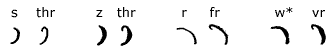
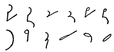

CHAPTER
FIVE
THE EVOLUTION OF “SHADING”
My contention is that it is not permissible
to elaborate distinctions of thickness in one and the same stroke,
by making it at one time thinner and at another thicker. Such
a contrivance may be placed in its obvious light if we could imagine
anyone proposing to abbreviate our ordinary writing by making
the “k”, when written thick and heavily, to stand
for “g”, and when thinned to be used for “k”
or so that “Kate” would be written with a thin “k”
and a thin “t”, and “giddy” with a thick
“k” and a thick “t’,!!
—Thomas Anderson
As you will have
noticed, I have taken pains to show that shorthand principles have
gone through a process of evolution. In tracing this process of
evolution in shorthand we often find that an expedie.nt, which is
introduced in an incidental way in one system, has been expanded
into an important basic principle in the structure of a later system,
and we often find that when the principle has been applied to the
limit of its possibilities there has sometimes come a reaction against
it. Thickening of characters as a means of distinction between similar
consonant sounds, is a good illustration of this.
As comparatively few people have given much
thought to the origin of the expedient of thickening in shorthand,
and its effects upon the history of shorthand when extended from
an expedient to a principle, I am going to explain it somewhat
fully.
The Origin of “Shading.”
— The first use of shading to distinguish between pairs of
consonants has been generally attributed to the Harding edition
of the Taylor system. Harding’s first edition was published
in 1823, and, as will be seen from a quotation given later in this
chapter, Isaac Pitman studied shorthand from the Harding edition
of the Taylor system and wrote it for seven years. Probably this
is why the introduction of shading for the purpose of distinguishing
between pairs has been very generally attributed to Harding.
While writing this series of articles
I had occasion to refer to Molineux’s “Introduction
to Byrom’s Shorthand,” and in it I found the following
sentences:
The next consonant,
it may be observed, is f or v, the latter being
in general represented by the same mark as j; though,
occasionally, it may be useful to distinguish from the former
by making a stroke a LITTLE THICKER.
A similar distinction is also occasionally
made, whenever it may appear either useful or necessary, between
the letters s and z, which, having the same
power, are generally signified by one and the same horizontal
straight line. When they are distinguished from each other, the
letter z is made a little thicker than the s.
The book from which I have quoted this
is the Fifth Edition, published in 1821; but probably the same statement
appeared in the previous editions, the first of which was published
in 1796. As Harding’s first edition of Samuel Taylor’s
system was published in 1823, it seems clear that he derived this
means of distinction between pairs from Molineux or Byrom—especially
as the distinction is made for the same pairs—f and
v; s and z—as in Molineux’s
edition of Byrom’s system.
In his “History of Shorthand” Isaac
Pitman quotes approvingly from the review of Byrom’s system
by Lewis, in which he says:
In
order to assist the learner he [Byrom] classifies the letters
in the following manner, according to their affinity of sound
or their labial connection:
p, b; f, v; s, z; sh, zh; t, d; th, dh;
k, g; ch, j; m, n; l, r; h.
Isaac Pitman, having
been familiar with this method of using shading as a means of distinguishing
between some of the cognates through his practice of Harding’s
edition of the Taylor system, expanded it to a general principle
for the purpose of distinguishing all phonetic pairs of letters.
A Retrograde Step. —
I regard it as extremely unfortunate for the progress of shorthand
that Isaac Pitman studied the Harding edition of the Taylor system.
If he had not done so, the history of shorthand for more than half
a century might have been entirely different, and the art might
now be part of the education of every child. Think what that would
have meant to the world! The saving in time and effort effected
for millions of people, to say nothing of the educational advantages
that would have been derived by all who studied the subject, simply
staggers the imagination.
By the extension of thickening to nearly all the phonetic
pairs as a means of distinction, the progress of the art was deflected
from its natural course for more than half a century. I say this
because I am thoroughly convinced that the real source of most of
the “complexities, perplexities, and eccentricities”
of Pitman’s Shorthand, which have prevented it from becoming
almost universal, is to be found in the introduction of shading
to distinguish the phonetic pairs. I hope to make this so clear
as to carry conviction to the mind of the impartial reader.
To begin, then, at the very beginning: “The
Life of Sir Isaac Pitman,” published by Isaac Pitman &
Sons, says:
Phonography,
he long afterwards wrote, with all the intellectual and social
benefits that follow in its train, has resulted from the seemingly
trifling circumstance that the author, at the age of seventeen,
learned Taylor’s system of shorthand from Harding’s
edition and that he was incited to the study chiefly by the persual
of the eloquent enumeration of some of the advantages arising
from the practice of the art, from the pen of Mr. Gawtress, the
publisher of an improved edition of Byrom’s system.
Mr. Andrew J. Graham,
author of the “Graham Standard Phonography,” in the
Phonographic World for August, 1889, pointed out that the use of
shading, as a means of distinction between the phonetic pairs of
letters, was suggested by Mr. Pitman’s previous use of the
Harding edition of the Taylor system. Mr. Graham said:
Isaac Pitman,
by his own acknowledgment, used Taylor’s system for seven
years prior to the publication of his “Stenographic Sound
Hand.” Taylor’s system was published in 1786, and
in 1823 there was published an improvement upon it by Harding
and it is my impression that Isaac Pit-man acknowledges in some
of his works that that was the system he used for seven years.
Although Mr. Pitman has never made any acknowledgment of his indebtedness
to Harding for the most important principles of “Phonography,”
we find in his 1837 edition that he copied the most important
of these from Harding’s book; and these were. the method
of representing vowels by dots and dashes and of distinguishing
pairs of letters by pairs of light and heavy signs, as f,
v; s, z. (Pitman’s Phonotypic
Journal, Vol. VI., 1847, p. 340). Mr. Pitman publicly acknowledged
that to one familiar with these representations of this idea it
was but child’s play, with the relations of the consonants
of the language generally known, to apply this important
principle in his alphabet; as, in the “First Edition”
(1837), p, b, t, d, ch, j, k, g, f, v, s, z.
[Mr. Graham then gave
shorthand illustrations showing how closely Mr. Pitman followed
Harding in the arrangement of the consonants in his 1837 edition.]
In fine, Isaac
Pitman in 1837 copied Harding’s alphabet, with its important
characteristics, more closely than he has his own 1837 alphabet,
in several editions since.
In addition, Mr. Pitman appropriated from Harding
the plan of writing words in three different positions,
to imply first-position, second-position, or third-position vowels.
See Harding’s book (1830) p. 24, last paragraph but one.
Also Harding’s plan of writing the vowels to preceding or
following consonants and the plan of reckoning the position from
the beginning or direction of the consonant.
Mr. Graham then states that Isaac Pitman
was indebted to Harding for:
1. Similar or paired signs for similar or paired
sounds. As to discovering these relations of the consonants they
were completely known to phonologists from 1787 (in Rev. William
Graham’s Shorthand, in Byrom’s system, and in
Harding’s).
2. The arrangement of vowels into two classes,
one part represented by dots, and the other by dashes, in three
different places, with a determination of the order in which those
vowels were to be placed, to read before or after; and as to the
direction of the strokes.
Mr. Graham’s
article is interesting, although it is marred by personal malevolence
towards the author of Phonography.
Phonetic Pairing Very Old.
— As emphasis is placed in the foregoing quotation on the
pairing of sounds, we may point out that Mr. Graham could have quoted
earlier instances of pairing than those he mentioned. The following
quotation from “The Life and Labors of Sir Isaac Pit-man,”
by Benn Pitman, is valuable in this connection:
It is a curious
incident in Stenographic history, that the exact order of Isaac
Pitman’s simple-vowel scheme, and to a great extent
the pairing of the consonants, was anticipated in one system
of Shorthand, namely, that by Holdsworth and Aldridge, joint authors
of “Natural Shorthand,” published in 1766. . . . It
was the first brief system of writing in which the phonetic principle
and a full alphabet were recognized.
In extending Harding’s
expedient to all the pairs Mr. Pitman found it necessary to give
the downward directions to nearly all the frequent pairs of letters,
since shading could not be applied with ease or certainty to upstrokes.
Therefore Mr. Pitman assigned downward characters to some of the
most common pairs of letters—t, d, p, b, f, v, s, z, sh,
zh, th, dh, r, l. This resulted in a constant downward tendency
in the writing, and to counteract this preponderating downward tendency
Mr. Pitman provided some of the letters with alternative forms which
were written upwards. In the introduction of these alternative forms
to patch up a defect in the arrangement of the alphabet—a
defect which was a direct outcome of the use of shading to distinguish
similar consonants—is to be found the origin of most of the
complications of Pitman’s Shorthand.
Evil Effects of “Shading.”
— To return to the arrangement of the Pitman alphabet: The
upward straight line was assigned to r (only one form of
r), one upward curve to l (only one form of l),
the other upward curve to sh (only one form of sh);
the horizontal straight facile line was assigned to comparatively
infrequent k, g; and the horizontal curves to
n, ng, m, mp. Just compare the importance of these letters,
and you will see at once that “stenographic balance”
(or lineal writing) is absolutely impossible when so many frequently-occurring
letters are written downwards. Remember, too, that t, d, p,
b, s, z, th, are ALWAYS written in a
downward direction and that the three upward characters, r,
l, sh, are as often written downward as upward,
and you will get an idea of what I meant about the evil effects
that the introduction of shading had upon shorthand construction.
In his “Note-Taker” (published in
1873) D. P. Lindsley pointed out that in Pitmanic Shorthand it was
possible to writes the combination strd in twenty ways.
He said:
It is not easy to employ
the best form for a word when several possible forms occur to
the mind. For example, suppose that a word containing the letters
s t r d is to be written. The form may be varied in more than
a dozen ways, retaining the letters in the same order. In the
following words, the only consonants written by the Phonographers
are s t r d; yet each word is written in a different way, as follows:
Then followed the outlines for these words: Saturday,
steward, stride, strayed, astrayed,
astride, eastward, yesterday, sturdy,
stirred, storied, star-eyed, asteroid.
Were the forms given above all the forms from
which the student must choose in writing words containing these
letters, the difficulty would not be so great as it really is;
for, besides these legitimate outlines there are eight
others, which are not recommended for use, yet are quite as likely
to be chosen by the young writer, who must choose between twenty
possible outlines to find the correct one.
Since the above was written the
“Committee on Shorthand Standards” of the New York State
Shorthand Reporters’ Association has declared that the “compound
consonant devices of Pitmanic shorthand contribute not a little
to its weakness through being pushed too far.” Says the committee:
“This factor more than any other is lost
sight of by the writer of mature experience. To realize its importance
you must by a conscious effort set aside the unconscious familiarity
acquired by thorough training and long experience and look with
the open mind and inquiring eye of the shorthand novice about to
be initiated into the mysteries of the shorthand art.
“Consider these eight signs, with their
respective meanings:

*The Benn Pitman form for W is used.
No
explanation however ingenious can evade the confusion of the student
on learning that a stem which, through every other variation of
half or double length, final hooks, loops, or circles, is consistently
S or some systematic addition to 5, here stands for the S-less compound
thr—and similarly for the other three pairs of stems.
“Consider the consonant sequence str

Here are twelve different
representations provided, of which every writer will use at least
a majority at one time or another. By any standard of the relative
frequency of the combination or of the component sounds this is
an overbalanced and wasteful use of material, contributing more
to mental hesitation than to facility.
“Consider, for a final illustration, the
double length device used for te; der, and ther
on all strokes, for ker, ger, and er,
in addition on some strokes, with a sentiment rapidly crystallizing
in favor of using it for ted on all strokes as well. In professional
shorthand writing almost any device or sign may or must be expected
to ‘carry double,’ but reasonable limitations must be
observed if positive legibility, the final test of any system, style
or writer, is to be maintained.”
Experienced writers of Pitman’s Shorthand
frankly admit that the numerous alternative forms for letters in
that system are a fruitful source of hesitancy and uncertainty in
writing. Few of them, I believe, have traced the necessity for these
alternatives to the original source—the introduction of shading
to distinguish the phonetic pairs. This defect in the system has
been so well recognized by the Pitman firm that there has been a
strenuous effort to create a feeling of reverence f or these alternatives
as perfect marvels of scientific ingenuity. A favorite method of
camouflage is to speak of the “wealth of material” represented
by these alternatives.
Alternatives Responsible for “Breakdowns.”
— As illustrations of the amusing manner in which the publishers
of Isaac Pitman Shorthand seek to defend the use of alternative
signs for the characters, I give two quotations. The first is from
an article on “Alternatives in Pitman’s Shorthand,”
which appeared in Pitman’s Journal for July 26, 1919:
One of the features that conspicuously distinguish
Pit-man’s Shorthand from inferior systems is the provision
of alternative forms for the representation of individual consonants.
. . . Failure to grasp or to recognize the full significance of
the rules which govern the employment of various alternatives
is responsible for many an examination breakdown. It cannot be
too often repeated that it is wise on the part of every student,
when he or she has gone through the adopted text-book or attended
a complete course of instruction, to go through the system again
from the beginning. The early rules will now be seen in the new
light. Little things that had been overlooked or imperfectly mastered
will reveal their real importance, which was perhaps less obvious
on the first persual. The great value of the alternative forms
would be brought out by a critical scrutiny such as is here recommended.
And the necessity of availing oneself fully of those alternatives
will be driven home with a force that was not felt originally.
. .
Let the intelligent, critical student ask
himself why it proves beneficial in practice to use sometimes
a stroke and sometimes a circle to represent s; why it is useful
to be able in some instances to write r or sh from the bottom
upwards and in other instances to write those letters from the
top downwards; why it is valuable to indicate an added t or d
by halving, and why in certain cases it is preferable to employ
the full-stroke forms to represent those letters; or how it is
that legibility and fluency are promoted by the use of hooks for
r, l, f, and v, in addition
to the alphabetic characters; or what is the precise gain secured
by the various modes of representing the aspirate, and he will
soon find that he is launched on a fruitful intellectual inquiry.
He will be brought into close and intimate contact with some striking
facts of the language and of the raw material from which
all shorthand writing is built up.
“Facing Facts.”
— The same journal for September 17, 1921, which I have just
received, contains an article under the title, “Pitman’s
Shorthand and its Facile Word-Forms,” which I give in full:
The student of Pitman’s Shorthand,
when he has discovered how efficaciously the use of alternative
characters to represent a single consonant serves the purpose
of vowel indication, is prone to apply the method universally.
To be able from the mere form of a consonant character to tell
infallibly whether an unwritten vowel precedes or follows it,
or whether a vowel is or is not to be read between two successive
consonants, comes as a revelation of hitherto unsuspected possibility
of handwriting. The beginner had encountered nothing like it in
learning shorthand. And he is justifiably fascinated. He has found
out for the first time how to make two blades of grass grow where
one grew before. His enthusiasm is diverted into a new channel
when his teacher begins to invite his serious attention to another
powerful tendency in this system. Alternative signs, he begins
to perceive, serve another purpose also. Shorthand is not merely
a method of brief writing. It is a method of rapid writing. The
twin requirements of legibility and speed have to be provided
for; and since all posmble combinations of geometric forms are
not equally capable of being made with perfect accuracy at speed,
there are instances in which it becomes imperative to select the
form that does fulfil that requirement. Ease of writing then becomes
the paramount consideration. And so the student having learnt,
for instance, that a downward r indicates a preceding
vowel and that an upward r indicates that a vowel follows,
is made aware that another indispensable need compels him sometimes
to subordinate the principle of vowel-indication to that of facility
of writing. The upward r in arch, artist,
answer and officer, and the downward r
in room, remain, and romance, show
how Pitman’s Shorthand faces facts.
Any intelligent
reader will know why the Pitman publishers feel it so necessary
to assume an attitude of profound admiration for alternative characters,
and to go into ecstasies over the manner in which their system “faces
facts.” The truth is that it is because they are face to face
with facts that such articles appear in almost every number of their
publications.
The consequence of the introduction of shading,
to distinguish the common phonetic pairs, is that instead of having
a fluent, onward, lineal movement the tendency of the Pitman writing
is invariably downward. It is almost impossible to write any long
word in Pitman’s Shorthand from the alphabet without the writing
descending two, three, and sometimes four strokes, below the line
of writing. This explains why all the early lessons in Pitman’s
Shorthand consist almost exclusively of monosyllables. Very
few long words are ever written from the alphabet in Pitmanic shorthand.
Alternative Forms a Hindrance.
— Writing on this subject in the Gregg Shorthand Magazine
for November, 1914, Mr. E. P. Aust (of Bath) said:
But whatever passage is chosen, the alphabetic
character of Gregg will always stand out as one of its strongest
features.
It must be a very common experience of Pitman
teachers, after explaining to and drilling their students in one
of the many modifications of the Pitman alphabet, each with its
numerous rules and exceptions, to find them continuing to write
alphabetically. The average student, when he has to write a new
word, writes it alphabetically, and generally lets it stay at
that. And if the case of the reporter (recently quoted by you)
who wrote reference in full, is at all typical, this
sort of thing is not confined to learners. In the case of the
learner, at any rate, I think it is a perfectly natural and logical
error. The Gregg student will, of course, act in precisely the
same way, save that he will use the vowels as well; but generally,
unlike the case of the Pitman learner, the resulting outline will
be correct, or nearly so. I went into my Gregg class the other
day, and found them trying— they were all beginners—to
write their names in Gregg. There were some, of course, who had
not gone far enough to do this, but quite a number of the students
succeeded. They had simply used their alphabet.
Within the past
week I received a letter from a gentleman in England who is known
to shorthand teachers everywhere as a foremost authority on Pitman’s
Shorthand, but whose name I cannot give without his permission.
Among other things he said:
After giving this time to Gregg Shorthand
and understanding something of its structure and beauty—you
do well to speak of Gregg artists—I find that the angular
outlines of Pitman are positively repellent-—they offend
my artistic eye. Certainly you have a very beautiful system, compared
with which Pitman is cold and dead.
That paragraph
would have gone in the first chapter had I received it in time.
The next paragraph has a more direct bearing on the point discussed
by Mr. Aust:
The great asset
of Gregg, apart from its fluent, script characteristic, is to
my mind, that a very wide vocabulary is available early; there
is more shorthand material in the first seven lessons of your
Manual than in the whole of the Pitman Manual.
Another
Evil of Shading. — Among my correspondents many years
ago was a talented and experienced journalist who had used Pitman’s
Shorthand for more than thirty years as a reporter. The gentleman
to whom I refer, Mr. J. L. Cobbin, of Cape Town, South Africa, had
published an improvement on Pitman’s Shorthand under the title,
“The Student’s Shorthand”; and papers from his
pen were read and discussed with great interest at the meetings
of the famous “Shorthand Society,” of London. Some of
the American shorthand publications of that time also gave considerable
space to his views on shorthand matters.
It is not known to the profession that shortly
before his death Mr. Cobbin became intensely interested in our system,
and sent me many warm commendations of it—interspersed, I
must admit, with pleas for the retention of certain Pitmanic features
to which long habit had accustomed him. His letters contained many
acute and philosophic reflections about shorthand systems and shorthand
principles. Among other things, he said: “Your shorthand,
I can plainly see, will endure a great amount of scribbling without
becoming illegible. This is a high recommendation, evident at a
glance to any practical shorthand writer—the mere amateur
‘s opinion I consider as utterly valueless.” He then
went on to say:
The very worst
fault in Pitman’s Shorthand is caused by an insufficient provision
being made for re-duplicating certain consonants, such as t,
d, p, b, k, g, ch,
j, and compelling the writer either to make a double-length
stroke thick in one half and thin in the other or vice versa, or
to sacrifice phonetic propriety by substituting one letter for another
or making the whole line of one thickness. Such outlines, for instance,
as pb, bp, td, dt, kg,
chj, jch, are intolerable; and yet there are many
words in which they must be written in Pitman’s Shorthand.
Happily your shorthand abhors such monstrosities.
Incessant Changes Due to Shading.
— If you trace the many changes that have been made in the
Isaac Pitman system—averaging an important change for every
three years of its existence, as has been shown by Dr. William D.
Bridge—you will find that most of them are due to an effort
to keep the writing to the line. This is true also of many of the
reporting contractions that have been adopted.
To remedy the fundamental defects in the system
Isaac Pitman built up a supplementary alphabet of alternative forms.
The result is that r can be written in Pitman’s Shorthand
in three different ways: an upward stroke, a downward stroke, and
a hook; l also has three characters; sh can be
written in two ways—upward or downward; the unimportant h
has four characters (and two of these are compound characters);
s has two characters; t and d can each
be expressed in two ways, and so can f, v, and
n; while w and y, in addition to the
signs used to represent them (compound signs, too), can each be
prefixed to other letters in six different ways!
Other Evils Follow. —
On account of the insertion of the vowels it is not necessary in
our system to have special signs for w and y, but in the Pitman
scheme not only are separate—and compound signs—assigned
to these letters, but as these are inadequate, a clumsy expedient
is introduced by which w and y are each prefixed to vowels in six
different ways!
Speaking of the absurdity of expressing the
aspirate (which Mr. Pitman described as “a mere breathing”)
in four different ways—by two compound characters,
a tick and a dot—this naïve passage in Pitman’s
Handbook for Shorthand Teachers will be read with amusement by many
of our readers:
The very wealth
of Phonography is sometimes the cause of perplexity to beginners.
They are so accustomed to writing a letter in longhand always
the same way that when they discover that the aspirate may be
written in Phonography in four ways, they do not readily grasp
the idea.
I have mentioned
twelve letters which are represented in Pitman’s Shorthand
by no less than thirty-six characters or expedients. In view of
this profusion of alternatives it is more than surprising that Isaac
Pitman, in criticizing the system of Samuel Taylor, should say:
Two forms should
never be given to one letter except from manifest necessity, and
such necessity should be avoided as much as possible in the construction
of the system; because, with respect to every word containing
any such letter it becomes necessary to determine by practice
which of the several forms of the letter is most judicious in
that particular word. Though this is an advantage in giving a
variety of outlines to the words, yet when the principle is extended
to a great many letters, the toil is greater than the reward.
The views of the
author of Phonography on this subject will be approved by every
experienced shorthand writer. And it embodies the strongest of all
arguments against Pitman’s Shorthand.
His brother, Benn Pitman, in his “Manual
of Phonography,” Par. 239-240, in speaking of outline formation,
said:
Since p,
b, t, d, f, v, s, z, sh, zh, l, r, n, w, y, and h
are represented in Phonography in more than one way, it is obvious
that many words may be written with several possible outlines.
The word abbreviation, for instance, has no less than twenty possible
f onus, though, of course, only a few of them are at all practical.
The difficulty of choosing the best from among
various possible outlines causes, perhaps, more embarrassment
to the average student of Phonography than any other one point,
and is best overcome by repeatedly reading and copying printed
phonographic publications, and by consulting the Phonographic
Dictionary, when a doubt arises, while writing original matter.
“Waste
of Material.” — When you hear anyone repeat,
parrot-like, something about the “wealth of material”
in Pitman’s Shorthand, or assert that there is a “waste
of material” in systems written with the slope of longhand,
just point to the awful waste of material involved in providing
twelve consonants with thirty-six methods of representation!
The selection, by Mr. Pitman, of the vertical
stroke to express t and its cognate, d, was particularly unfortunate.
As t is one of the three most common consonants in the language,
its expression by a vertical stroke gave a downward tendency to
the writing, as anyone can easily ascertain by an examination of
a page of Pitman writing. In an effort to remedy this, there was
introduced what I consider to be the most illogical device to be
found in any system of shorthand — the half-length expedient.
For the information of those who have not studied Pitman’s
Shorthand it may be well to explain that in the Pitman system when
a letter is written half its usual length it is supposed to add
t or d. As someone expressed it, you “subtract to multiply.”
“Multiplication by Subtraction.”
— Consider what this means. Manifestly a single letter is
vastly more frequent than any combination of it with another letter;
thus, the letter p probably occurs fifty or one hundred
times where pt occurs once. Yet by the halving expedient
the shorter sign is assigned to the combination and not
to the single letter.
From the standpoint of logic, the halving expedient
is absolutely indefensible. It is merely an attempt to patch up
an organic defect in the construction of the alphabet. But towards
it, too, there has been a consistent effort to create a spirit of
reverence. Anything that is abstruse and long established is accepted
by many people without question when it is called “scientific”!
In the Phonographic World for February, 1891,
Mr. Justin Gilbert, official reporter, Boise City, Idaho, advises
the shorthand author “to look well to it that each principle
in his system is applied in such a manner as to afford the greatest
possible benefit to the reporter and amanuensis. That the principle
of halving to add t or d is NOT SO applied is evident, as will be
seen at even a casual glance. The principle as it is now used is
a very useful one, of course, but if applied in another direction
it would be made more than five times as useful.”
A very talented Isaac Pitman reporter, Mr. George
Far-nell, in a paper on “The Struggle for Existence in Shorthand
Material,” which was read before the New England Shorthand
Reporters’ Association in 1900, said:
The halving of a letter was an old and well-tried
expedient long before Mr. Pitman’s time, but theretofore
had not been made use of for the purpose of addition.
With an alphabet such as just referred to,
the phonographer is enabled to violate, with impunity, a fundamental
rule of mathematics, and add to the meaning of a character by
taking away something from it; in other words, to perpetuate the
paradox of making addition by subtraction.
The admission that
the halving principle “violates a fundamental rule of mathematics”
is hardly consistent with the claim that Pitman’s Shorthand
is the embodiment of “Nature, Science, and History!”
Mr. Farnell, however, is more philosophic and decidedly more candid
than most Pitmanic advocates, for he ends his paper with these words:
While, personally, I cannot think that better
systems are not possible, yet I admit to the weakness that I would
leave the discovery of better systems to others, being content
with present shortcomings, if there are any, rather than fly to
others that I know not of.
I repeat that the
use of all these alternatives is the source of a very large percentage
of the complication and indefiniteness of Pitman’s Shorthand.
Had the alphabet been selected without the necessity of striking
the most common pairs downward—a necessity due to the
introduction of shading—there would have been no need
of all these alternatives, and therefore no need for the innumerable
rules, and exceptions to rules, that abound in Pitman’s Shorthand.
Because our system, like longhand, is free from
compulsory shading, it can be written with greater freedom and with
greater speed than any of the shaded systems. And, to a great extent,
its remarkable legibility is due to the absence of many of the fine
distinctions required by any system in which shading is applied
for any purpose.
Before leaving this part of the subject it may
be well to point out that the loss of time caused by shading is
not due entirely to the process of thickening the characters. There
are two other causes of loss of time: one is the extreme difficulty
of executing in rapid succession light and heavy characters;
and the other is the slight (but perceptible) pause which must necessarily
take place after each shaded character. The greater freedom of mind
and hand secured through the elimination of the necessity for observing
different degrees of pressure will be apparent to any one.
Mr. Thomas AlIen Reed, in discussing brevity of outline, once said:
“There are inflections and inflections. Twenty easy inflections
may be written more rapidly than a dozen difficult ones with awkward
joinings. The easy flow of a system is one of its more practical
elements.” That is an opinion that will be endorsed by every
experienced reporter; and there is nothing that contributes more
to the “easy flow” of the writing than the elimination
of thickened characters.
- Chapter Six
-
|